This tool is used on EEG data for the following purposes:
In any of these cases, you will need the electrodes coordinates in an appropriate file .
Very often during EEG recording, some tracks are definitely corrupted, but you still have to stick with the setup and the resulting data.
To alleviate this fact, one can interpolate these bad channels a posteriori. The values from the bad electrodes are all discarded, and the neighbors (geometrically speaking) of these bad electrodes are taken to compute an estimate of what the original values would have been looking like.
Hence the points:
Interpolating is about re-creating values, please keep this is mind and avoid it if you can.
You need a removed electrode to have enough remaining geometrical neighbors to have the most correct interpolated values.
Bad electrodes located on the border of the cap, once removed and "interpolated", are indeed extrapolated, which is not good at all. Usually if too much bad electrodes rely on the border, you can not recover them safely.
Seems obvious, but let's remind you that the geometry of the electrodes has to be known with the best precision, be it from a single subject or from an average of subjects. Check the symetry and the correct positions of landmarks.
See an example of three channels that have been successfully interpolated:
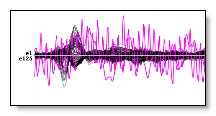
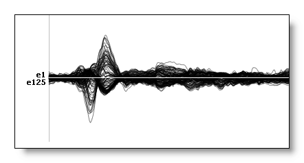
You can transform your data from one electrodes system to another one. This is useful to make data from different systems comparable or to be processed together.
Here are some points worth mentioning:
You need two electrodes coordinates files , one for each system.
You can successfully go from a high number of electrodes down to a lower number of electrodes . The other way round, though technically working, will of course not create any new information from the data. This will simply spread the available data into more channels (you don't gain any resolution).
Again, watch out for the geometrical borders of both systems . If they really don't match, the resulting interpolation will be rather an extrapolation, which is not good at all for your business.
If you simply need to remove some electrodes (say the border), you may consider the faster and easier Export Tracks utility.
See an example of 125 channels interpolated down to 41 channels:
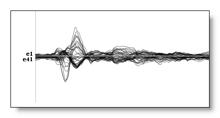
Well, this is simply the two previous steps done at once: removing bad channels, and switching to another system.
Doing this simultaneously will save you some time, and, more important (well, it's a matter of choice what is more important between these two points), will very likely save some little extra precision in the resulting data.
This is a well known method, based mainly on the following articles:
"Mapping of scalp potentials by surface spline interpolation", F. Perrin, J. Pernier, O. Bertrand, M.H. Giard, J.F. Echalier, in Electroencephalography and clinical Neurophysiology, 1987, 66: 75-81. "Spherical splines for scalp potential and current density mapping", F. Perrin, J. Pernier, O. Bertrand, J.F. Echalier, in Electroencephalography and clinical Neurophysiology, 1989, 72: 184-187. + errata, Electroencephalography and clinical Neurophysiology, 1989 "Spline Interpolation of the Scalp EEG", Thomas C. Ferree, Technical Note from Electrical Geodesics Inc, See ResearchGate, 2000.
For each time frame, do:
A spline is computed through the values of the non-excluded electrodes, by taking into account the geometry of these electrodes.
The spline is then used to access any point on the surface of the original geometry , even at location without electrodes (this is all the interest indeed).
For all electrodes of the targetted system, retrieve the values at their locations by simply looking at the spline.
You can choose between three different types of spline:
Surface Spline, after projection on a plane of the electrodes position. Not recommended if electrodes are not a grid...
Spherical Spline, after using a unitary spherical version of the electrodes position.
3D Spline, the preferred one as it preserves the real geometry of the electrodes.
A spherical spline can also be used to compute the Current Source Density.
If you switch from one electrodes system to another one, you have to deal with the very important topic of coregistration. This is how two different systems are made geometrically superimposable. Most of the time, geometries of different systems are far from matching each other, so we have to handle that case. See f.ex. two non-matching geometries of electrodes:
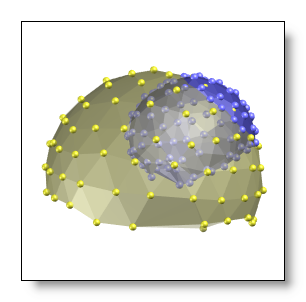
There are for sure many different methods, and we sticked to a safe one: using fiducial electrodes to build an intermediate, normalized geometrical system . Here is a view of the international 10-20 system, which were defined as to reliably relate to the underlying brain structures :
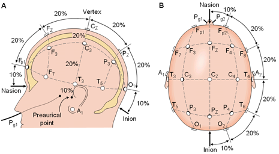
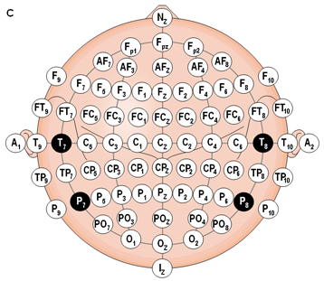
(Images taken from: Jaakko Malmivuo & Robert Plonsey
Bioelectromagnetism - Principles and Applications of Bioelectric and
Biomagnetic Fields)
To define the normalization function (for each electrodes system), we need to know the following five landmarks (front, sides, back and top of the head):
|
Fpz
|
||
|
T3 |
Cz
|
T4 |
|
Oz
|
More precisely, we need to know the equivalent of these landmarks in the systems you use . New high-density nets usually don't match the standard 10-10 (or 10-5) system, so you have to figure out yourself where these 5 landmarks are. This has to be done carefully, f.ex. by averaging 10 subjects together, or getting this information from the company who built the recording machine.
If one landmark has no direct equivalent, you can give a set of electrode which average position will be taken. F.ex. if Oz does not exist , you could specify "O1 O2" instead.
From the 5 landmarks, a 12 parameters affine transform is derived, which will account for (3 parameters for each line):
Origin translation
Rotation
Scaling (stretching)
Shearing
The end result is a centered, unitary and orthogonal geometrical system, hence called the normalized system .
F.ex. see here the original system to be interpolated, then its normalized version (impossible to see here is the origin and the overall scaling that are completely different), and a spherical version of the normalized system. Note that the global shape of the normalized system has been preserved, which is of course not the case of the spherical one:
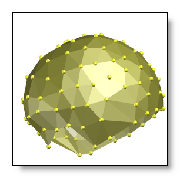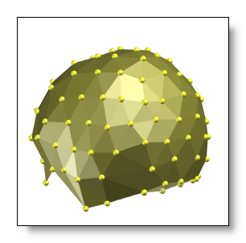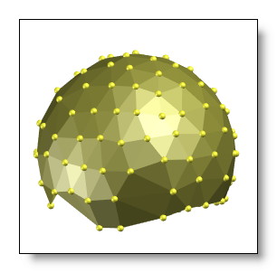
Using these normalized systems is a snap, f.ex. going from system A to system B, simply transform to Normalized System A, then transform back to system B:
|
Original Coordinate System A |
Original Coordinate System B |
|
|
| |
| |
|
|
Normalized Coordinate System A |
|
Normalized Coordinate System B |
Here is an example of the original system , the target system, and then the original system finally transformed and superimposed onto the target system :
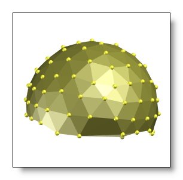
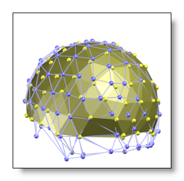
See also this discussion about the electrodes on the border , and if it leads or not to extrapolation, and this note about removing too much electrodes.
Finally, we can add that it is not how good the normalized systems are in absolute (of course, a good transformation is preferred) that really matters. Rather, it is that by applying the same normalization scheme on both systems , we can transform coordinates from one system to another. The normalized systems are just intermediate stages in the whole processing.
Call the dialog from Tools | Interpolating EEG files menu, which is context sensitive:
Called from an EEG file, the processing applies only to this file.
In any other case, the dialog will operate in Batch mode, requiring you to later select some files.
Then the following dialog appears:
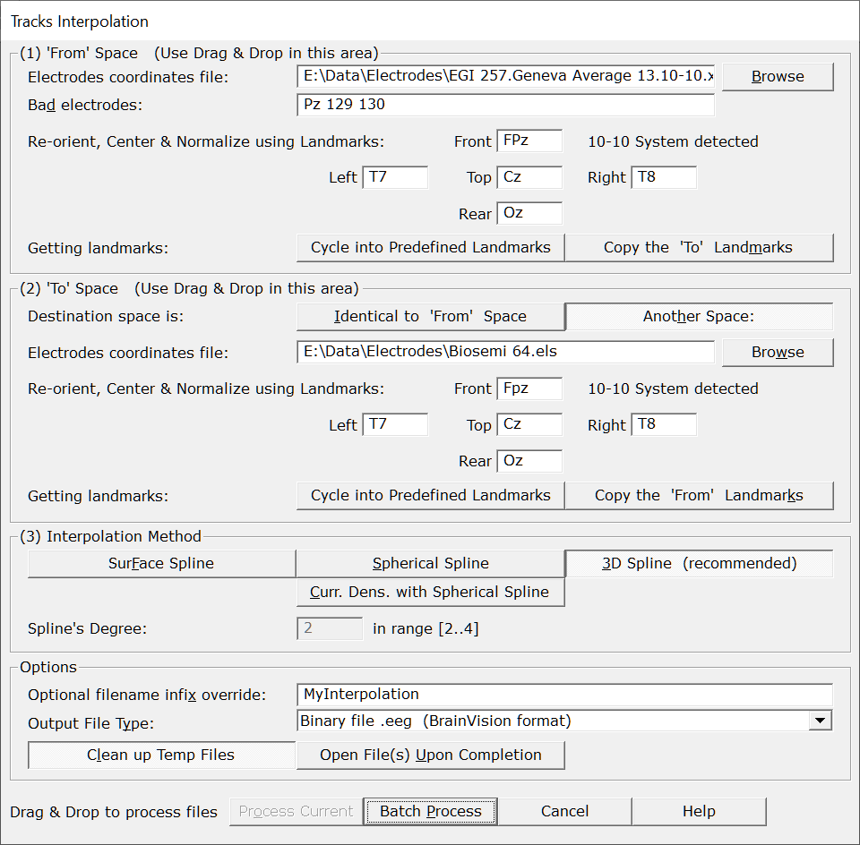
|
Tracks Interpolation |
|
|
'From' Space |
This box deals about the original system. See this discussion about how 'From' and 'To' spaces should geometrically relate to each other . |
|
Electrodes coordinates file: |
Give the file with the electrodes coordinates . You can Drag & Drop the file directly in this box. |
|
Bad electrodes: |
Optional bad channels to be interpolated. Let the field be empty if you have no bad channels, and just use the toolbox to switch to another system . Also see this note about removing too much electrodes. |
|
Re-orient, Center & Normalize using Landmarks: |
We need to re-orient, center and normalize the electrodes coordinates (used in the spline computation , and also to coregister between two systems). To achieve that, you have to provide the names of the electrodes pointing to the front, left, top, right and rear (the 5 landmarks we need). Or if you're lucky, Cartool might have already recognized your electrodes system! If this is the case, electrodes names will be pre-filled for you. |
|
Front / Left / Top / Right / Rear |
Each of these edit boxes contains the electrodes names used to point in the corresponding direction. You can put more than one electrode in one box, in this case, the average (3D barycenter) of the electrodes position will be taken. Useful as very often, no one electrode of a given system exactly matches the 10-10 system. |
|
Getting landmarks: |
Just handy buttons to fill these 5 boxes a little more easily... |
|
Cycle into predefined landmarks |
Force Cartool to cycle into its predefined, known systems, until one best matches yours. |
|
Copy the 'To' landmarks |
Let's copy the targetted (the 'To') system landmarks. |
|
'To' Space |
This box is used to specify an optional destination system. See this discussion about how 'From' and 'To' spaces should geometrically relate to each other . |
|
Destination space is: |
Choose the behavior of the interpolation. |
|
Identical to 'From' Space |
If you just want to interpolate bad channels, and remain in the same system, check this button. If this is set, you don't need to specify the remaining parameters of the 'To' box. |
|
Another Space: |
You want to switch to another system, this is the button to check! |
|
Front / Left / Top / Right / Rear |
Same as per the 'From' case. |
|
Interpolation Method |
Choose the type of spline. |
|
Surface Spline |
Project the electrodes onto a plane, then use a 2D spline. Not recommend, unless for grid electrodes. |
|
Spherical Spline |
Spline on a centered, unitary sphere. Results are quite good. The spherical version of the original system is directly derived from the normalized system. |
|
3D Spline |
3D Spline, which accounts for the real geometry of the head. This is the recommended default spline. Use the normalized system. |
|
Curr. Dens. with Spherical Spline |
Use the spline to compute the Current Source Density (aka Laplacian of the potential), as in these articles. |
|
Spline's Degree: |
This is the parameter m from the articles cited . See this note. |
|
Options |
|
|
Optional filename infix override |
The exported filenames will have these characters inserted. If empty, the infix will be a compound made from all the parameters. |
|
Clean up Temp Files |
Uncheck this box if you want to see by yourself how the centering, the normalization and coregistration have actually been performed. And cerise sur le gâteau, Cartool even provides you with 2 more files: the original system finally transformed into the target system , and the target system also transformed back into the original system. This way you can superimpose these files and visually check. |
|
Open Files Upon Completion |
Open the interpolated EEG files. |
|
Process Current |
Enabled when called from an EEG. The interpolation applies only to this current file . This button remains disabled until all the parameter dialogs have received enough (and consistent) informations . If this is not the case, first check the current dialog: if its "Next" button is disabled, the problem is in the current dialog. Otherwise, browse the other dialogs for some missing informations. |
|
Batch Process |
Enabled when not called from an EEG. This will open a dialog for you to pick the set of files (even from different directories) to be interpolated. This button remains disabled until all the parameter dialogs have received enough (and consistent) informations . If this is not the case, first check the current dialog: if its "Next" button is disabled, the problem is in the current dialog. Otherwise, browse the other dialogs for some missing informations. You can Drag & Drop files directly to run the Batch Process! |
|
Cancel |
Quit the dialog. |
|
Help |
Launch the Help to the right page (should be here...). |
After centering and normalizing, we should end up with a geometrical system which:
Origin is on the line Fpz - Oz, intersected by the orthogonal projection of Cz.
X axis points to Fpz, and have a unitary length.
Y axis points to T3 (though it may have been slightly adjusted after projection of Cz), and have a unitary length.
Z axis points to Cz, and have a unitary length.
All three axis are of course orthognal.
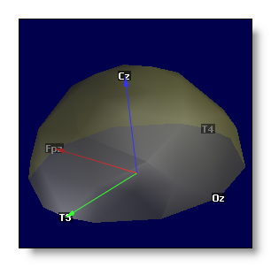
For a spline of degree m, the actual degree of the polynomials it is made of is ( m - 1 ).
We definitely recommend to use m = 2, that is polynomials of degree 1, which is very close to a linear interpolation. The advantage is that it will very unlikely create values that can exceed the minimum and maximum values of the data . New values will remain within the range of values of the original data (most of the time).
Creating new extrema values could be very detrimental when computing the source localization. This would produce false brain soures just beneath the new extrema electrode!
Note: as per 2024, spline degree is not editable from user, and will remain set to 2.
When interpolating to another system, you should be sure not to have extrapolation issues. As a rule of thumb, targetted systems which geometry overflows the original system are to be avoided. See here a few fine and bad examples (the original system is in yellow, the targetted system is in blue):
OK, the original system's border is beyond the target system's border:
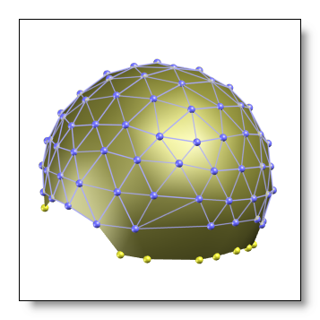
NOT OK, the target system's border is beyond the original system's border:
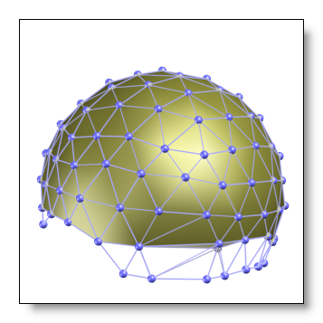
NOT OK, even though the original system has way more electrodes, their geometrical distribution is not wide enough to encompass the target system's border:
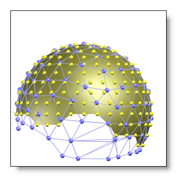
OK, though the target system has a denser array of electrodes (smooth out the output):
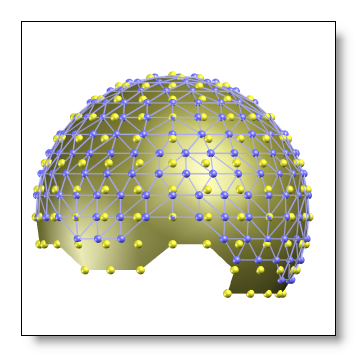
OK, the original and the target system extents are geometrically very close to each other (interpolating in the other direction, from the "blue" to the "yellow" system could even be tolerable):
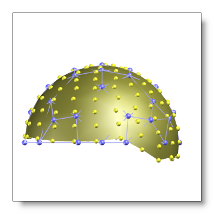
It is not so advisable to have to remove a bunch of electrodes (though it might happen due to circumstances) that will punch a big hole out of your system . Having fewer neighbors to interpolate from will of course lead to less precise results. See here just how removing 4 electrodes that are too close to each others seems a pretty good promise of an awkward interpolation:
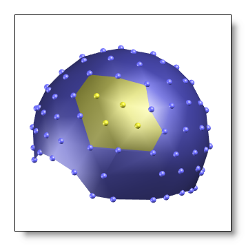
Noter that you can still remove / interpolate an electrode, say Fpz, and use its position as a landmark for the coregistration.
In this case, using the interpolation is simply an overkill. Consider the Export Tracks instead...
Interpolated EEG files are written in the same directories as their sources . File names are inserted with the infix string, which briefly describes the type of interpolation used. Currently, only .ep or .eph are outputed.
The temporary geometry files are written in the same directories as their original geometry files, which may be different from the EEG directory. The electrodes coordinates are written as .xyz files.
Verbose file .vrb (text), showing all the parameters.